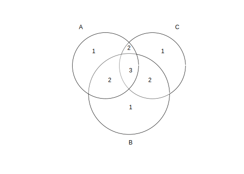
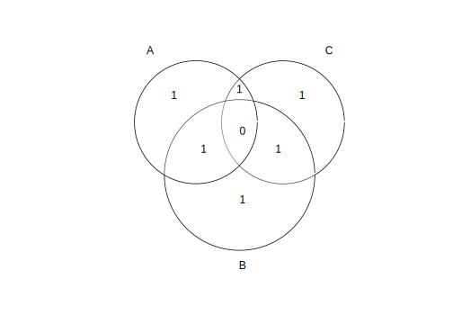

2.3 Fundamental Properties of Set Operations
The operations union \(\cup\) and \(\ \cap\), above, have some identities or ‘laws’ with well established names. Making \(A,B\) and \(C\) sets of events related to a sample space \(S\), the following ‘laws’ can be defined:
- Idempotent:
- \(A \cup A = A\)
- \(A \cap A = A\)
#Let's make A = {(1,2,3,4,5,6)}
A<-1:6
AUA<-union(A,A)
A_A<-intersect(A,A)
A
## [1] 1 2 3 4 5 6
AUA
## [1] 1 2 3 4 5 6
A_A
## [1] 1 2 3 4 5 6- Commutative:
- \(A \cup B = B \cup A\)
- \(A \cap B = B \cap A\)
#We already have A, so let's create B:
B<-4:9
AUB<-union(A,B)
BUA<-union(B,A)
#The 'union' function doesn't provide an ordered vector, so we use the 'sort' fuction
#to order BUA set to make it easier to compare:
AUB
## [1] 1 2 3 4 5 6 7 8 9
sort(BUA)
## [1] 1 2 3 4 5 6 7 8 9- Associative:
- \(A \cap (B \cap C) = (A \cap B) \cap C\)
- \(A \cup (B \cup C) = (A \cup B) \cup C\)
#Let's create the last vector/set:
C<-3:8
#You can write the command below in separate, as we did in examples before. However,
#now, they'll be written in a sigle command.
#For the intersection:
intersect(A,intersect(B,C))
## [1] 4 5 6
intersect(intersect(A,B), C)
## [1] 4 5 6
#For the union:
union(A,union(B,C))
## [1] 1 2 3 4 5 6 7 8 9
union(union(A,B),C)
## [1] 1 2 3 4 5 6 7 8 9- Distributive:
- \(A \cup (B \cap C) = (A \cup B) \cap (A \cup C)\)
- \(A \cap (B \cup C) = (A \cap B) \cup (A \cap C)\)
#As before, the codes will be written more starightforward
#For the first item:
union(A, intersect(B,C))
## [1] 1 2 3 4 5 6 7 8
intersect(union(A,B), union(A,C))
## [1] 1 2 3 4 5 6 7 8
#And for the second:
intersect(A, union(B,C))
## [1] 3 4 5 6
union(intersect(A,B), intersect(A,C))
## [1] 4 5 6 3
#You can sort the second to make the comparison easier:
intersect(A, union(B,C))
## [1] 3 4 5 6
sort(union(intersect(A,B), intersect(A,C)))
## [1] 3 4 5 6- Absortion:
- \(A \cup (A \cap B)=A\)
- \(A \cap (A \cup B)=A\)
#For the union:
union(A, intersect(A,B))
## [1] 1 2 3 4 5 6
A
## [1] 1 2 3 4 5 6
#For the intersection:
intersect(A, union(A,B))
## [1] 1 2 3 4 5 6
A
## [1] 1 2 3 4 5 6- Identity:
- \(A \cap S = A\) - Remember de S is our notation for sample space.
- \(A \cup S = S\)
- \(A \cap \Phi = \Phi\) - Remember that \(\Phi\) is our notation for the empty set. You can also find the empty defined as \(\emptyset\) and \(\varnothing\).
- \(A \cup \Phi = A\)
#Let's create both sets. For simplicty matters
S<-c("Identity", "Associative", "Distributive", "Absortion", "Idempotent", "Commutative")
A<-c("Associative","Absortion","Commutative")
O<-c() #The empty set
intersect(A,S)
## [1] "Associative" "Absortion" "Commutative"
union(A,S)
## [1] "Associative" "Absortion" "Commutative" "Identity"
## [5] "Distributive" "Idempotent"
intersect(A,O)
## NULL
union(A,O)
## [1] "Associative" "Absortion" "Commutative"- Complement
- \(S^{c} = \Phi\)
- \(\Phi^{c}=S\)
- \(A \cap A^{c} = \Phi\)
- \(A \cup A^{c} = S\)
- \((A^{c})^{c} = A\)
setdiff(O,S)
## NULL
setdiff(S,O)
## [1] "Identity" "Associative" "Distributive" "Absortion"
## [5] "Idempotent" "Commutative"
intersect(A, setdiff(S,A))
## character(0)
# Remember that the complement of 'A' related is related
# to the Sample Space 'S'. So it's the difference between
# 'S' and 'A': S-A. Which is all elements that are in 'S'
# but not in 'A'.
union(A,setdiff(S,A))
## [1] "Associative" "Absortion" "Commutative" "Identity"
## [5] "Distributive" "Idempotent"
setdiff(S,setdiff(S,A))
## [1] "Associative" "Absortion" "Commutative"I want to break down the last property of this law, \((A^{c})^{c} = A\) to make it clearer (both mathematically and in R).
Note that \((A^{c})^{c}=S-(A^{c})\) and that \(A^{c}=S-A\). So, \((A^{c})^{c} = S-(S-A)\). That said:
# Let's do it inside out.
A_complement<-setdiff(S,A) # S-A
A_complement
## [1] "Identity" "Distributive" "Idempotent"
setdiff(S,A_complement) # S-(S-A)
## [1] "Associative" "Absortion" "Commutative"- The principle of duality (De Morgan’s Law):
- \((A \cap B)^{c}=A^{c} \cup B^{c}\)
- \((A \cup B)^{c}=A^{c} \cap B^{c}\)
I will not provide the “proof” for this law here, since it’s easily verified. It would be nice if you try it for yourself to check your understanding. However, I’ll put it in the end of this ‘book’.
2.3.1 The Principle of Inclusion-Exclusion (PIE, for short)
I decided to make a separated topic for this principle because of its importance and the need for a longer explanation. The principle of inclusion-exclusion is an equation relating to the counting of the sizes of two sets and their union. It states that if A and B are two (finite) sets, and they are not disjoint (disjoint sets are sets that have no elements in common), then the sum of its elementes would be:
\(|A \cup B|= |A|+|B|-|A| \cap |B|\)
Need to note that, this principle is related to the counting of elements and not with the resulting set. When we write a set between bars, \(|A|\) we are refering to its cardinality, or simply the number of elements it contains.
For example, if \(A=\{Pink, Blue, Red, Purple, Green\}\), then its cardinality is \(|A|=5\). To illustrate the principle let’s consider the following:
Let: \(A=\{Pink, Blue, Red, Purple, Green\}\) and \(B=\{Yellow, Blue, Red, Light\ Blue, Green, Ochre, Silver\}\).
Then: \(A \cup B=\{Pink, Blue, Red, Purple, Green, Yellow, Light\ Blue, Ochre, Silver\}\).
The cadinality of this sets would be: \(|A|=5\), \(|B|=7\) and \(|A \cup B|=9\)
A<-c('Pink', 'Blue', 'Red', 'Purple', 'Green')
B<-c('Yellow', 'Blue', 'Red', 'Light Blue', 'Green', 'Ochre', 'Silver')
card_A<-length(A) # 'length' function count the number of elements in a vector.
card_B<-length(B)
AuB<-union(A,B)
card_AuB<-length(AuB)
A
## [1] "Pink" "Blue" "Red" "Purple" "Green"
card_A
## [1] 5
B
## [1] "Yellow" "Blue" "Red" "Light Blue" "Green"
## [6] "Ochre" "Silver"
card_B
## [1] 7
AuB
## [1] "Pink" "Blue" "Red" "Purple" "Green"
## [6] "Yellow" "Light Blue" "Ochre" "Silver"
card_AuB
## [1] 9Using PIE: \(|A \cup B|= |A|+|B|-|A| \cap |B| \therefore |A \cup B|= 5+7-3 \therefore |A \cup B|=9.\)
length(A)+length(B)-length(intersect(A,B))
## [1] 9It seems pretty lame, since we know the size and elements of each set and we can simply call it in the console to check. But it has some practical applications, specially whe the sets are not very well defined. I’ll show an example below.
The PIE with two sets is in its most simple form and, hell, what does it do?
When you are counting sets and add them up, let’s keep two for awhile, and they have some intersection, you are counting some elements twice. To eliminate this problem, we subtract the number of elements of their intersection.
However, what of we have three sets? Then it reads:
\(|A \cup B \cup C|=|A|+|B|+|C|-|A \cap B|-|A \cap C|-|B \cap C| + |A \cap B \cap C|\)
To give you a better understanding of what “is happening” during the calculations above, let’s use some diagrams to make more simple.
This is what happens when you do \(|A|+|B|+|C|\). 
Because you’re adding up the number of elements of the sets, the intersections are counted more than once.
To remove these elements that were counted more than once, we subtract all the intersections, \(|A|+|B|+|C|-|A \cap B|-|A \cap C|-|B \cap C|\); 
Finally, we add the intersection of the three sets: \(|A|+|B|+|C|-|A \cap B|-|A \cap C|-|B \cap C| + |A \cap B \cap C|\), so every set and operations are counted only once.
We can generalize this for n sets, but it’s a little more complex and will not be covered here (perhaps in next review). But it can be easily found on Google.
As I said before, it seems pretty obvious, since we know the sets and can check everything. Sometimes, however, it’s necessary to choose distinct elements from a collection of overlapping sets and, in this case, things don’t look so simplistic.
Take a look in the next example:
During a survey, 200 people are asked about which forms of transport the had used in the last month. 150 of them used trains, 80 used bike or trains and 180 used both. That said:
- How many people had used bike in the last month?
- How many had not used either form of transport?
This can be answered using the inclusion-exclusion principle for two sets.
\(Let = \left\{ \begin{array}{ll} A: people\ that\ used\ trains\\ B: people\ that\ used\ bikes \end{array} \right. \)
From the information above we have the following:
\(|A| = 150 \\ |B|=? \\ |A| \cap |B| = 80 \\ |A| \cup |B|=180\)
PIE: \(|A \cup B|=|A|+|B|-|A \cap B|\)
Substitute the values:
\(180=150+ |B|-80\ \therefore |B|=180-150+80 \therefore |B|=70.\)
So, 70 people used bike last month.
The second question is more simple: if 200 people were interviwed and 180 used trains or bike, then: \(200-180=20\)